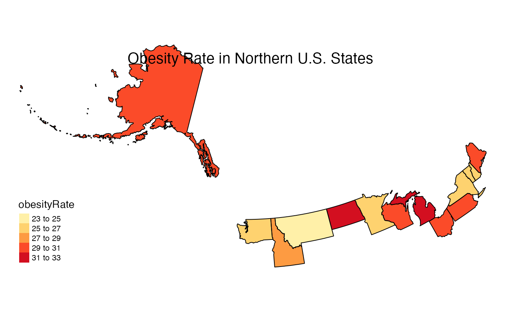
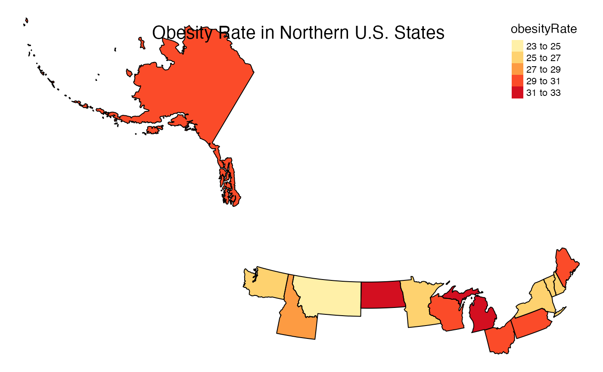

vignettes/articles/Customizing_State_Maps.Rmd
Customizing_State_Maps.RmdThe goal of this document is to serve as a tutorial for creating customized maps of U.S. states and territories by using custom projections or the tmap package.
In general, the default projections in stateMap() are appropriate for common state groupings. However, the projection parameter can be used to override the default projections as needed.
Below is an unusual group of states with the default projection.
library(MazamaSpatialPlots)
northernStates <- c("AK", "WA", "ID", "MT", "ND", "MN", "WI",
"MI", "OH", "PA", "NY", "VT", "NH", "ME")
stateMap(
data = example_US_stateObesity,
parameter = 'obesityRate',
palette = 'YlOrRd',
breaks = seq(23, 33, 2),
stateCode = northernStates,
stateBorderColor = 'black',
title = "Obesity Rate in Northern U.S. States"
)
The projection is oddly rotated in this case. To remedy this, a manual projection can be defined:
myproj <- "+proj=lcc +lat_1=32.5 +lat_2=71.4 +lat_0=51.9 +lon_0=-102.9 +x_0=0 +y_0=0 +datum=NAD83 +units=m +no_defs"
stateMap(
data = example_US_stateObesity,
parameter = 'obesityRate',
palette = 'YlOrRd',
breaks = seq(23, 33, 2),
stateCode = northernStates,
projection = myproj,
stateBorderColor = 'black',
title = "Obesity Rate in Northern U.S. States"
)
One benefit of using stateMap() is that the output is a ggplot2 object. Therefore, maps can be further customized using functionality from the tmap and ggplot2 packages. Many visual adjustments including legend and title locations, fonts, and background colors can be made by simply appending your stateMap() plot with arguments in tmap::tm_layout(). Furthermore, tmap::tm_style() can be used to leverage built in styles and tmap::tm_compass() can be used to add a compass to your map. The three examples below demonstrate how to build customized visualizations using both stateMap() parameters and tmap functionality.
stateMap(
data = example_US_stateObesity,
parameter = "obesityRate",
breaks = seq(20,38,3), #increasing color detail
conusOnly = FALSE ,
stateBorderColor = 'black',
) +
tmap::tm_layout(
frame = TRUE,
main.title = 'Obesity Rates in U.S. States and Territories',
main.title.position = c("center", "top"),
title.fontface = 2,
fontfamily = "serif",
bg.color = "grey85",
inner.margins = .05,
legend.position = c('right', 'top')
)
stateMap(
data = example_US_stateObesity,
parameter = "obesityRate",
stateCode = c('ME', 'NH', 'VT', 'MA', 'RI', 'CT'),
stateBorderColor = 'black',
title = 'Obesity Rates in New England'
) +
tmap::tm_layout(
frame = TRUE,
frame.double.line = TRUE,
title.size = 1.2,
title.fontface = 2,
fontfamily = "serif",
bg.color = "grey85",
inner.margins = .08
)The stateMap() function allows us to create attractive maps very efficiently and with a lot of flexibility. The function creates highly customized visualizations through direct inputs and by harnessing the functionality of the tmap package.